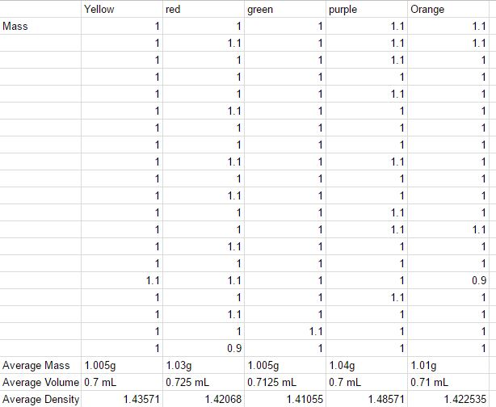

We began collecting our data by using a balance to find the individual mass of each Skittle.
We then added the mass of a set of 20 Skittles(all the same colors) and divided it by 20 to find the average mass of each skittle.
We did that particular mass test for each color of skittle(Yellow, Red, Green, Purple, Orange).
We also put the same sets of 20 into a graduated cylinder to find the total volume using water displacement, and then divided that number by 20 to find the average volume of each skittle.
here is an image of us seperating the skittles for data collection.
After we measured the average volume and mass of the skittles, we then proceed to calculate the density of the skittles.
What we found was that the color of the skittles had little to no impact on the density.
The grape skittle had the highest density, about 5g/ml above the rest, which makes sense because in nature grapes are a dense fruit.
Here is the speadsheet of our data.

and here is a bar graph of the densities of the skittles.
The purple skittles, or grape skittles have the most mass at 1.04 grams.
The grape skittles also have the highest density at 1.48571 g/mL.
Yellow or lemon and green or lime are tied for lowest mass at 1.005 grams.
Lime skittles have the lowest density at 1.41055 g/mL, but overall the color of the skittle doesn't affect the density that much.